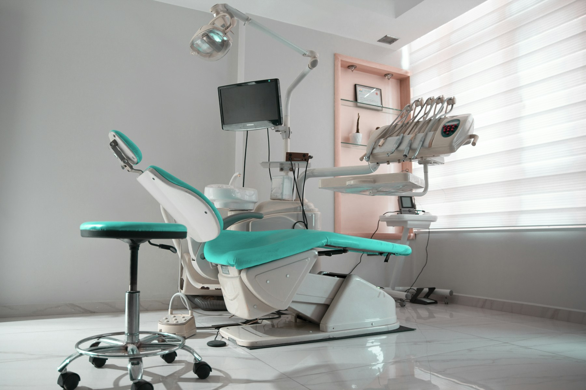

Small habits.
Lasting confidence.
An examination, a professional clean, and a conversation about what your smile needs. Thoughtful preventive care is where it all begins.
Examinations / Hygiene / Prevention
Beautiful dentistry starts with understanding.
Explore your smile. Discover the possibilities.
Choose a jaw, separate the layers, or click any tooth to explore its shape and role.
ARTISTIC ANATOMY STUDY · NOT A DIAGNOSTIC MODELFrom the everyday essentials to a fresh start,
explore care built around your individual smile.
No pressure. Just a clearer picture.
An examination, a professional clean, and a conversation about what your smile needs. Thoughtful preventive care is where it all begins.

SPACE TO FEEL AT EASE. ↗A welcoming space. Time to ask questions. Care explained in plain language. We imagined a dental studio that feels as thoughtful as the treatment itself.
A softer setting for a more relaxed experience.
See the possibilities before choosing your next step.
Your questions, your goals, and anything that would help you feel more comfortable.
A personal assessment and a clear explanation of the options worth considering.
A thoughtful plan with room for your preferences, your questions, and your pace.
This concept puts conversation first. In a real appointment, tell your dental team what worries you and ask about breaks, comfort options, and what to expect.
The interactive views introduce possible types of care. A qualified dental professional would assess your individual needs before recommending treatment.
Enamel is a fictional dental studio created as a Nexorge portfolio project. You can try the consultation flow, but it does not send information or make a real booking.